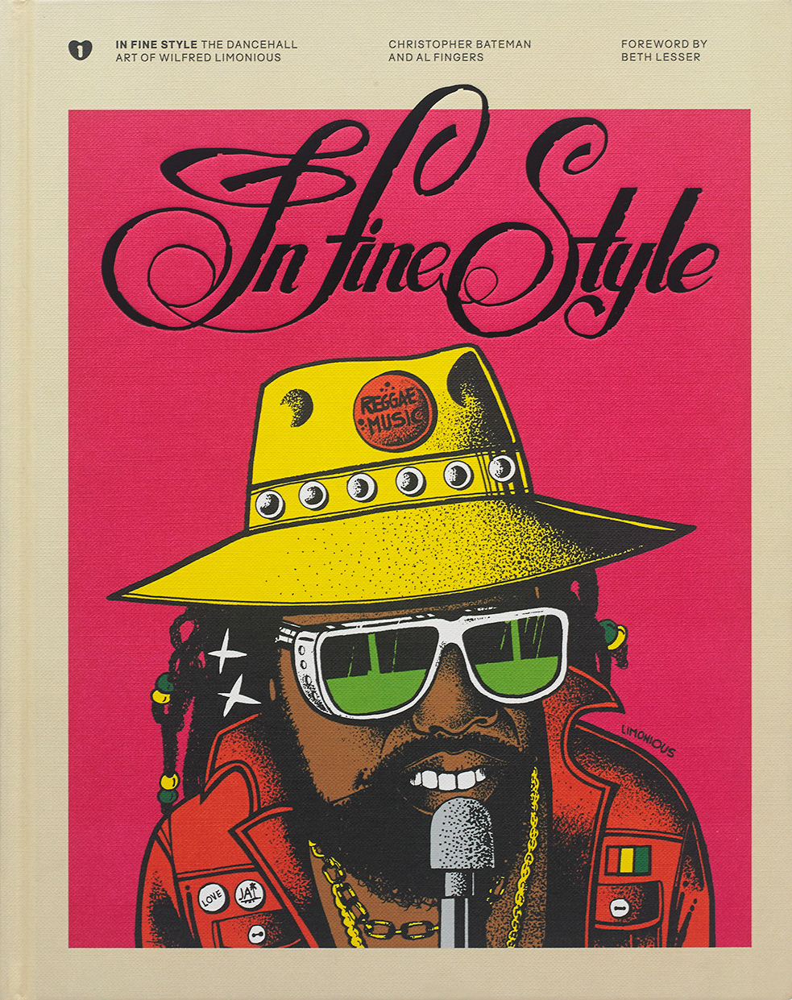
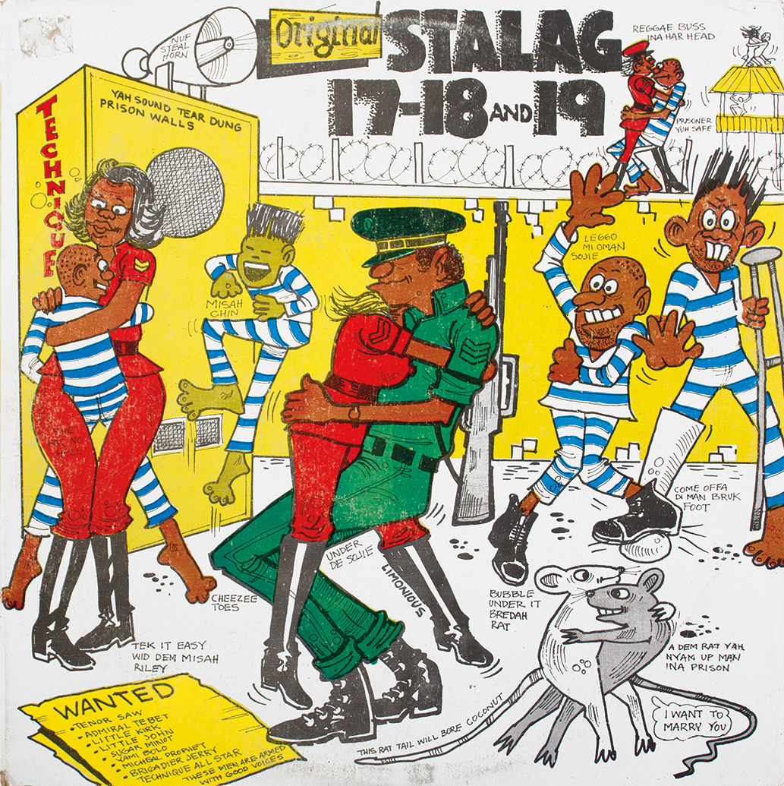
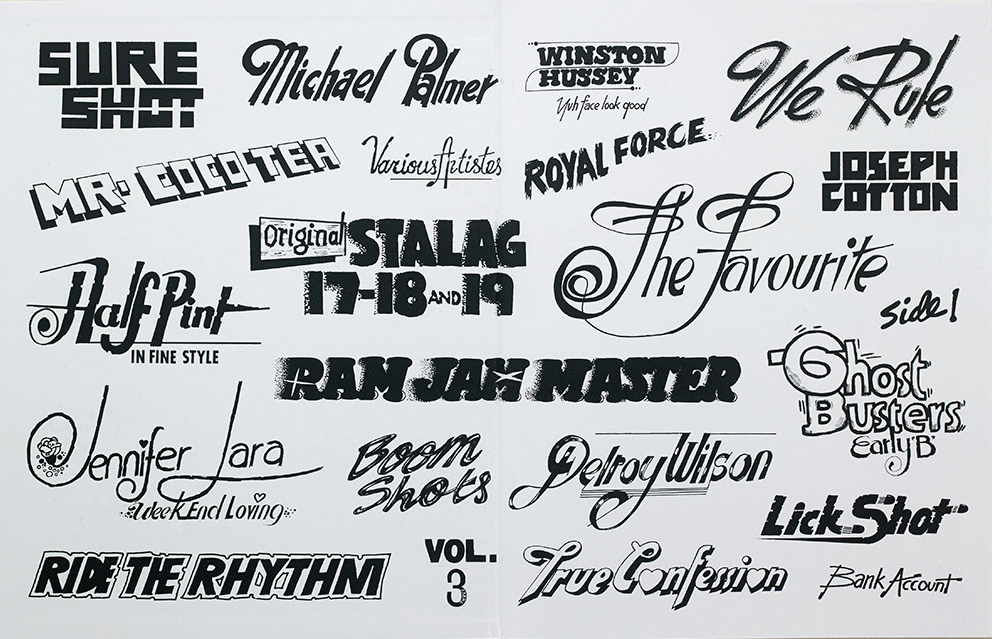
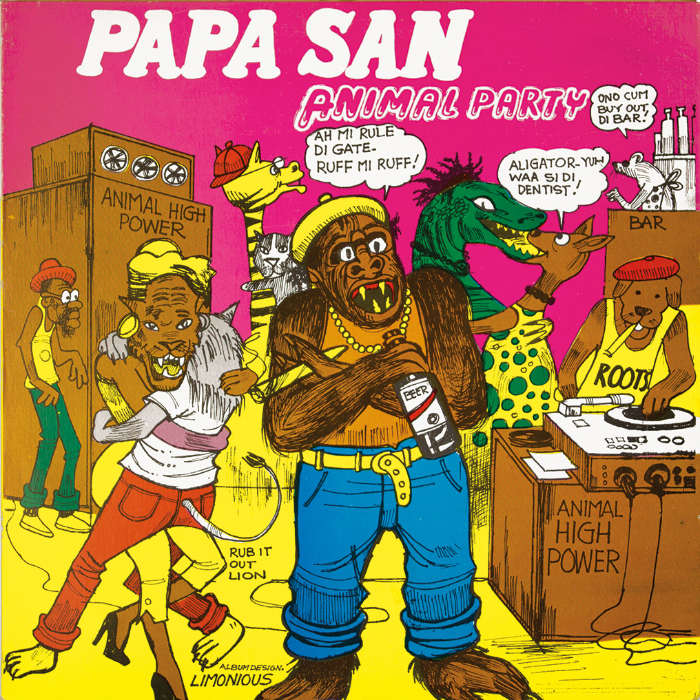

Jamaican artist Wilfred Limonious is known as the father of dancehall art. Limonious’ career and work that came to visually define a seminal era in Jamaican culture. His style was unique, and managed to perfectly embody the spirit of the music inside the sleeve – vibrant, humorous and often outrageous. Limonious also had a keen eye for typography, and developed a few of his own distinctive hand-drawn typefaces. The world he created was the perfect visual counterpart to the island’s emerging dancehall scene.



